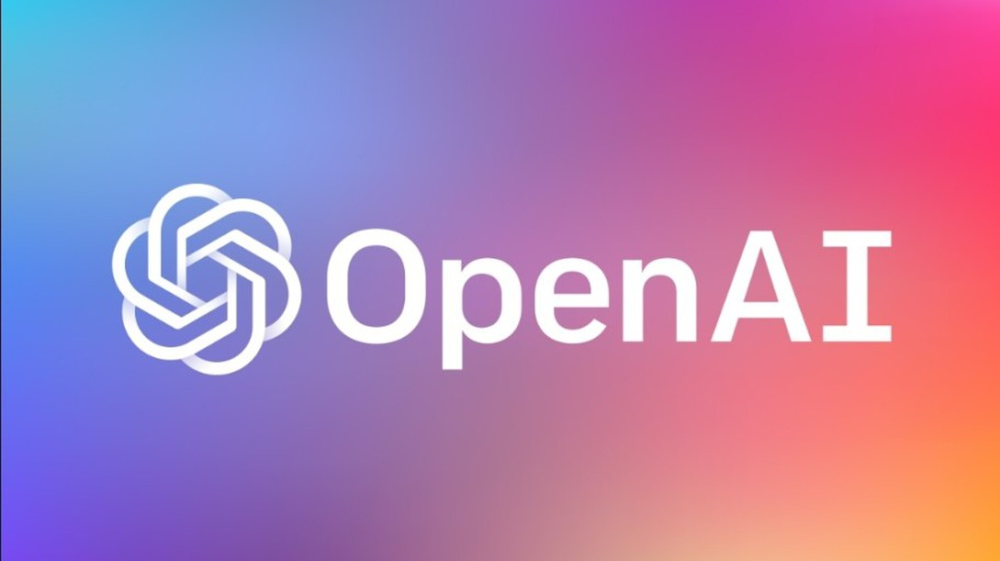

מידע מרכזי
שנת הקמה: 2015
מדינה: ארצות הברית
מייסדים: סם אלטמן, גרג ברוקמן, איליה סוצקבר, אילון מאסק ואחרים
פריצת דרך: ChatGPT הפך את הבינה המלאכותית היוצרת לנגישה לקהל הרחב בסוף 2022.
מוצרים / מודלים: GPT, ChatGPT, DALL·E, Sora
כיווני הרחבה עתידיים
בהמשך הדף יכלול אטימולוגיה, ציר זמן מפורט, פרופילי מייסדים, מודלים מרכזיים והשפעה על עולם ה־AI.